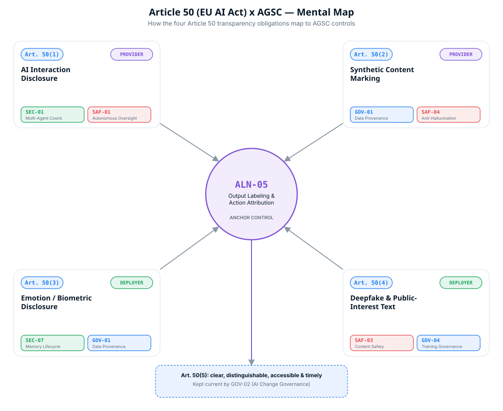

Article 50 of Regulation (EU) 2024/1689 is the EU AI Act's core transparency provision: it requires disclosure whenever a person interacts with an AI system, whenever content is synthetically generated, whenever emotion recognition or biometric categorisation is used, and whenever a deepfake or AI-generated public-interest text is published. Below is how the AGSC standard's controls operationalize each obligation, plus the full article-by-article crosswalk.
Each paragraph creates a distinct disclosure duty, owed by a different party, at a different moment. AGSC's ALN-05 (Output Labeling & Action Attribution) is the anchor control for all four; the supporting controls are what make the disclosure accurate, persistent, and current.

Systems designed to interact directly with people, chatbots, voice agents, avatars, must be built so the person is clearly informed they're talking to an AI, unless that's already obvious from context.
Exempt for AI systems authorised by law to detect, prevent, investigate or prosecute crime, unless the system is publicly available for reporting offences.
Providers of systems generating synthetic audio, image, video or text, including general-purpose AI systems, must mark outputs in a machine-readable format that's detectable as artificially generated or manipulated, using solutions that are effective, interoperable, robust and reliable as far as technically feasible.
Deployers of an emotion-recognition or biometric-categorisation system must inform the natural persons exposed to it about the system's operation, and process any related biometric data in accordance with applicable law.
Subject to law-enforcement exceptions and to data-protection obligations under separate EU law.
Deployers of a system that generates or manipulates image, audio or video content amounting to a deepfake must disclose that origin. Separately, deployers publishing AI-generated or AI-manipulated text to inform the public on matters of public interest must disclose that too.
Exempt for law-enforcement use; lighter-touch disclosure for evidently artistic, creative, satirical or fictional work; text exception where a human has reviewed and takes editorial responsibility for the content.
Paragraph 50(5) additionally requires that all of the above information be provided clearly, distinguishably, accessibly, and no later than the first interaction or exposure, generic references buried in terms and conditions don't satisfy it. AGSC's GOV-02 (AI Change Governance) is what keeps disclosure mechanisms current as output channels and workflows change.
Article 50 is one part of a wider mapping. Every one of the 25 AGSC controls traces to the EU AI Act, NIST AI RMF, and ISO/IEC 42001, here's the EU AI Act column in full; the row highlighted below is the transparency obligation this page focuses on.
| Control | Name | Pillar | EU AI Act |
|---|
Full crosswalk including NIST AI RMF and ISO/IEC 42001 columns: frameworks/regulatory-crosswalk.md →